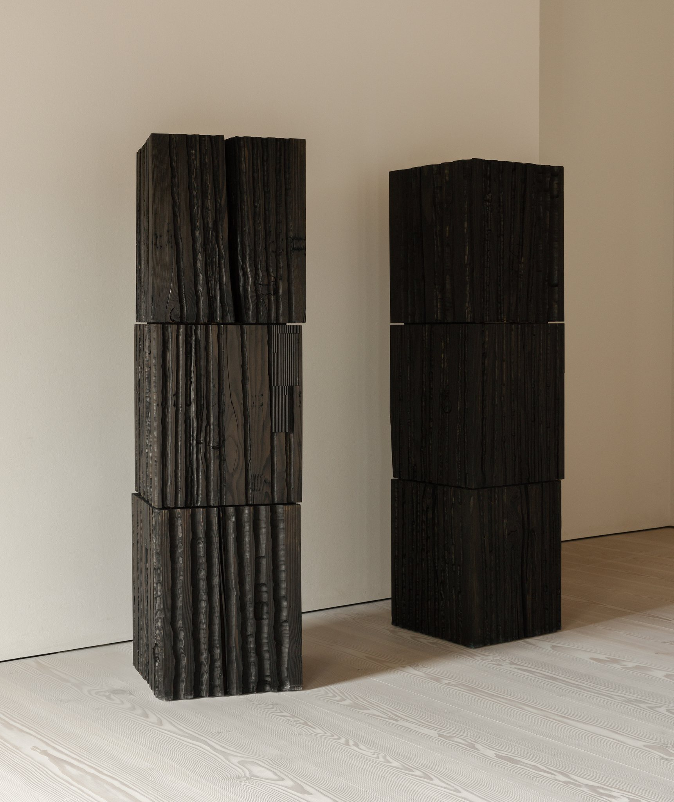
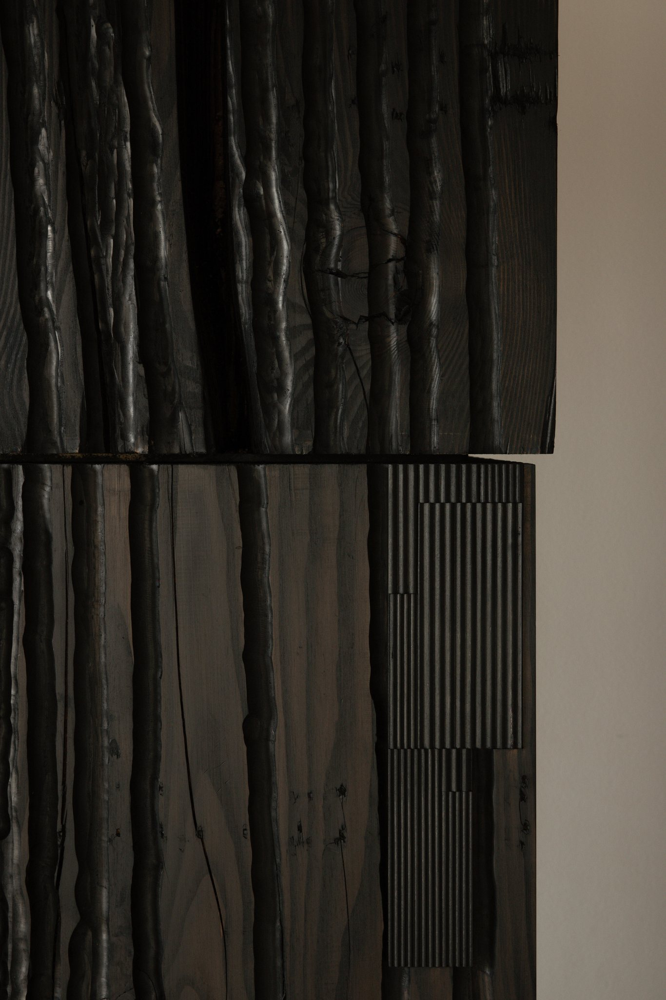
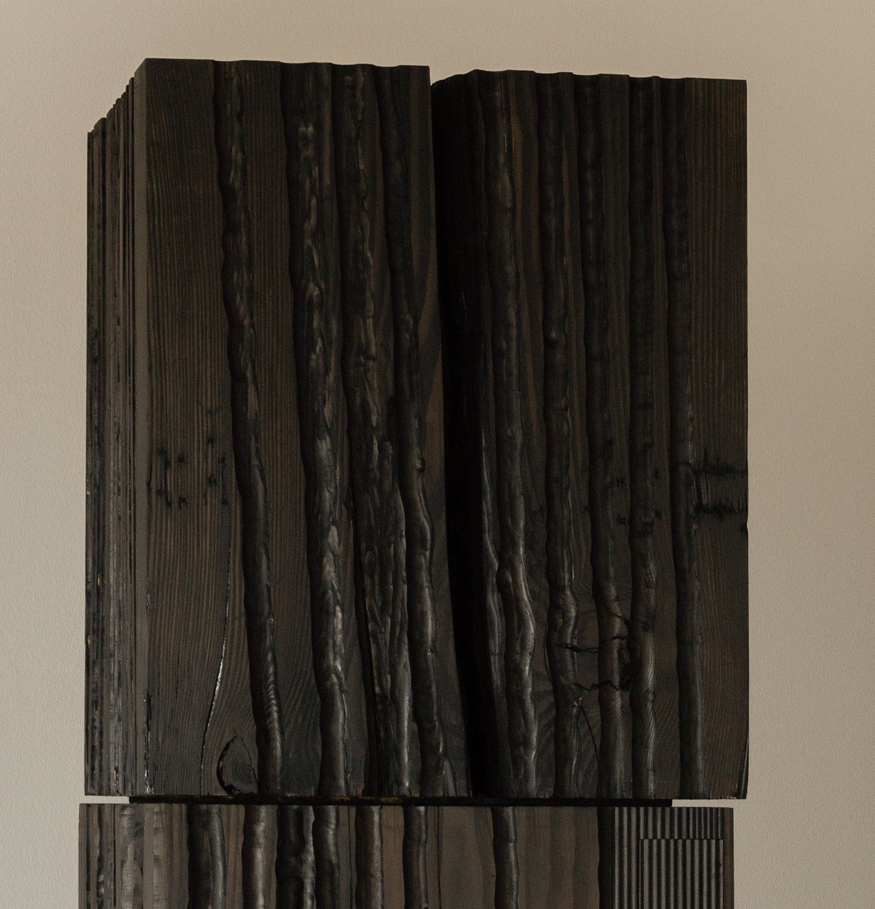
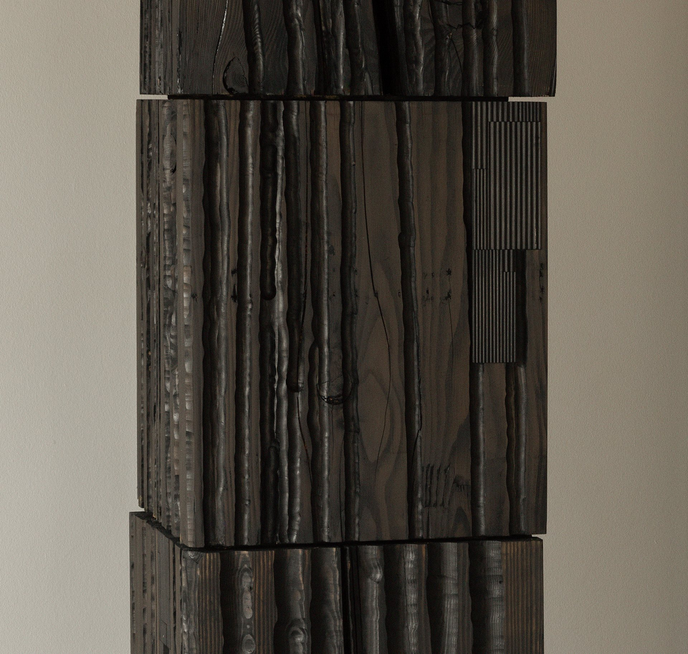
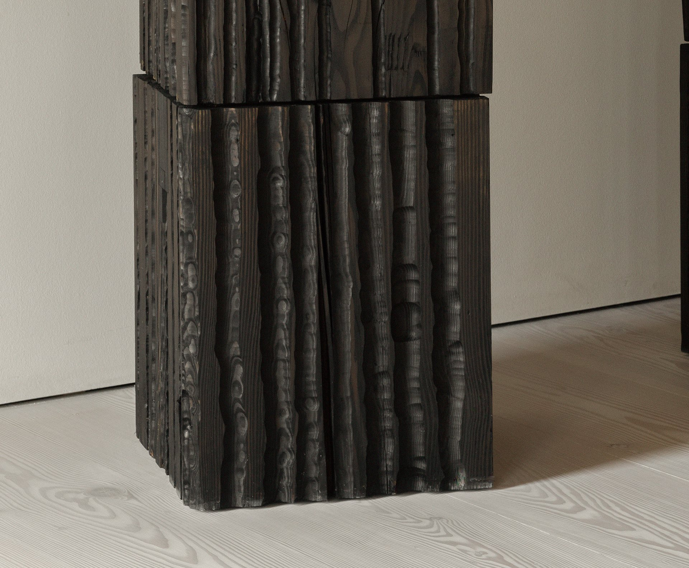
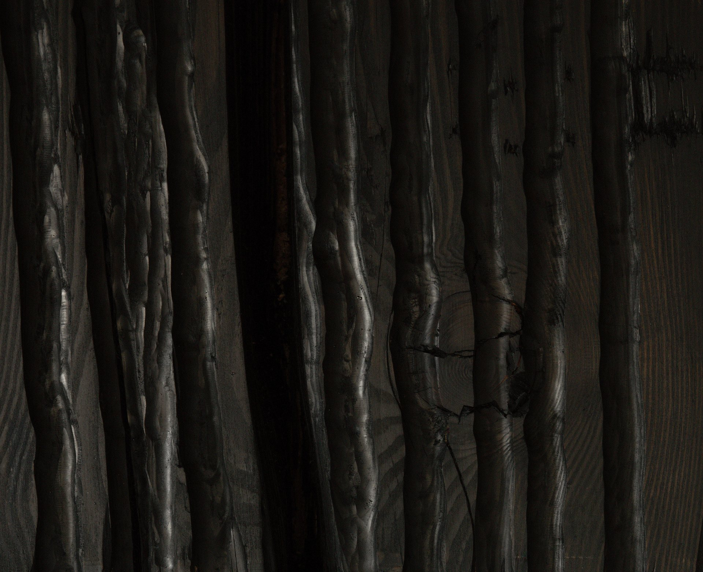

DINESEN SHOWROOM
the monoliths are a part of the Dinesen Factory's Showroom exhibition in Jels (DK).
monoliths #1 & #4 / Anthropocene manifestations
in collaboration with lasse folke - http://lassefolke.dk
The monoliths are made of solid 100 year old douglas fir. The timber is selected by Dinesen and comes from the Black Forest in Germany.
'DINESEN SHOWROOM JELS'
(2025-)
in collaboration with
lasse gam folke
.
a huge thank you to all the kind sponsors
supported by
Beckett Fonden
Dinesen
Dreyers Fond
Grosserer L.F. Foghts Fond
Kunstrådet i Ikast-Brande
Statens Værksteder for Kunst
Statens Kunstfond - Projektstøtte Arkitektur
.
photos by
Dinesen
http://lassefolke.dklasse gam folkeBeckett FondenDinesenDreyers FondGrosserer L.F. Foghts FondStatens Værksteder for KunstStatens Kunstfond - Projektstøtte Arkitektur





